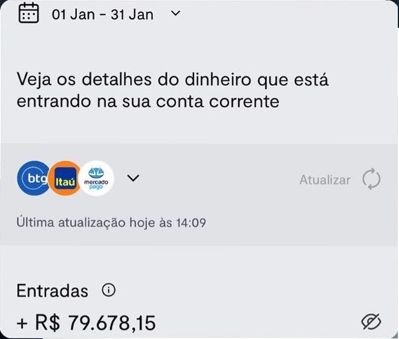

Como faturar mais de 10 mil por mês trabalhando no
conforto de sua casa?
Introdução:
Neste ebook, você aprenderá como escalar seus ganhos trabalhando em casa
para mais de 10 mil por mês por meio de uma consultoria
premium. Reunimos toda nossa bagagem e conhecimento técnico para
apresentar um método capaz de atrair clientes, aumentar o valor do serviço
e fidelizá-los, proporcionando maior estabilidade financeira.
attach_money
1 - Por que não consigo um bom faturamento mensal?
Se você é formado em nutrição, educação física ou outra área que requer
captação de clientes, já deve ter feito essa pergunta em algum momento.
Resposta: Você é
igual a todos, não tem nada de diferente!
Isso mesmo, você não se destaca, pois acaba repetindo o que a maioria já
faz e, por isso, é só mais um oferecendo mais do mesmo. Desta forma, você
nunca atingirá o sucesso financeiro.
Como eu posso resolver esse
problema?
Seja diferente, entregue o que os outros não entregam, com isso, seu
ticket (valor agregado ao seu trabalho) será muito maior, permitindo que
você trabalhe menos e ganhe mais.
A resposta pode até parecer óbvia e simples, mas lembre-se, se fosse
fácil, muitos não estariam se perguntando a primeira pergunta e estariam
faturando mais.
Você precisa se destacar, mas para isso, há um método, e esse método irá
aprender neste ebook, então continue a se deleitar com a leitura.
attach_money
2 - Captação! Como posso atrair mais clientes?
Como dito, muitos profissionais acabam repetindo o modelo de outros. Isso
em um mercado já saturado , onde a concorrência é alta, só o
tornará mais um, fazendo com que o público não veja seu trabalho com tanto
valor.
Na luta contra a concorrência, muitos profissionais acabam abaixando seus
preços, fazendo assim que necessitem trabalhar cada vez mais e ainda assim
obtenham um faturamento baixo.
Agregar valor ao seu trabalho permitirá que você cobra mais.
Para isso, é preciso que você também entregue mais, e isso pode ser feito
por meio do nosso método de consultoria premium.
A competição nunca será um problema se você entregar mais que os demais.
No entanto, você não pode ceder à tentação de abaixar seu
preço. Por mais que isso assuste pelo medo de não conseguir novos
clientes, esse ato será um tiro no seu próprio pé a longo prazo, pois
desvalorizará seu trabalho, fazendo com que os clientes não
te enxerguem como uma autoridade na área e perca credibilidade.
Sua imagem é muito
importante!
Sua imagem, ou seja, como você é visto, será a primeira impressão que
possíveis clientes terão de você. Trabalhar suas redes sociais, mas
também toda sua forma de comportamento, vestimenta, locais que
frequenta, publicações em determinados ambientes, serão
fundamentais para construir uma imagem de bem-sucedido, o
primeiro passo para gerar autoridade e credibilidade.
Não estamos dizendo que é preciso ter milhares de seguidores em redes
sociais, mas é fundamental que você possua uma boa imagem para seu
público e crie uma boa relação com eles.
Lembre-se, o boca a boca é importante como divulgação, mas é um modelo
limitado. Precisamos abordar mecanismos de
maior captação, escalonando seu faturamento para 10 mil, 20
mil, 30 mil e por aí em diante.
attach_money
3 - Quais são as estratégias de marketing e captação que
posso utilizar?
Bem, as opções são inúmeras, mas este ebook tem o intuito de ser objetivo.
Iremos selecionar, dentro do nosso método de consultoria premium, as
opções que nos fizeram faturar mais de 70 mil em um mês.

Trabalhe suas redes!
Como dito anteriormente, você não precisa de
milhares de seguidores para faturar alto e ter uma boa
estabilidade financeira, mas é preciso que você crie uma boa relação com
seu público.
Como posso fazer isso?
Crie conteúdos para seu nicho, mas principalmente conteúdos que façam
seu público se interessar por o que você tem a dizer. Escute-os em suas
queixas, traga o que eles querem saber. Caixinhas de perguntas nos
stories são uma excelente ferramenta para isso. Assim, seu
próprio público redige seu conteúdo, e como o conteúdo vem do interesse
e curiosidades deles mesmos, eles irão parar para lhe escutar,
vinculando e engajando-os a você. Isso poderá ser traduzido em
novos clientes futuramente.
Mas lembre-se, estude bastante. Para ter autoridade e de fato
desempenhar um bom trabalho, é necessário realmente dominar sobre o
conteúdo que você se dispôs a explicar e trabalhar.
Cuidado com a sua aparência,
você é a sua vitrine!
Sua aparência física não deveria ser julgada, mas infelizmente ela será
e você precisará se adequar a isso se deseja passar
maior credibilidade.
Por exemplo, se você é um Personal Trainer ou nutricionista esportivo e
deseja atender um público visando melhora da composição corporal
(hipertrofia/emagrecimento), sua aparência física será julgada e
cobrada. Entenda, você não precisa ser um atleta, mas é importante que
seu corpo demonstre que você come o peixe que vende. Isso porque, ao
contrário disso, levará a baixa credibilidade. Não é à toa
que pessoas sem formação acadêmica vêm roubando espaço no meio das
consultorias online simplesmente por possuírem físicos acima da média.
Caso você consiga conjugar o conhecimento técnico-científico mais um
corpo proporcional aos que se vende, tenha certeza de que você obterá um
grande salto de credibilidade. Isso renderá novos clientes.
Toda essa estrutura passada até agora foi orgânica, mas sabemos que as
redes sociais possuem algoritmos que limitam o alcance do público aos
conteúdos postados. Sendo assim, outra ferramenta muito interessante a
ser utilizada a seu favor é o “tráfego pago”. Existem alguns mecanismos
para trabalhar com essas ferramentas, e este ebook não tem o propósito
de ensinar como os usar, mas sim que são ferramentas
úteis para escalonar a captação de novos clientes. Desta
forma, você conseguirá ultrapassar os limites que os algoritmos impõem.
Ferramentas como o próprio tráfego do Facebook são capazes de direcionar
seus anúncios a nichos, ou seja, a um público-alvo. Isso faz com que
seus conteúdos cheguem de fato a quem interessa, possíveis clientes.
Existem diversos tutoriais no próprio YouTube ensinando como utilizar
essas ferramentas. Caso não tenha condições de contratar o serviço de um
colaborador ou empresa que trabalha com tráfego, você mesmo pode estudar
e entender essas ferramentas para
usá-las como uma poderosa arma.
attach_money
4 - O que fazer após captar os clientes?
Bem, você seguiu todos os passos anteriormente citados, agora já tem
pessoas procurando pelo seu trabalho, o que é ótimo. No entanto, surge uma
nova questão:
Como precificar o meu trabalho
sem ceder ao baixo preço?
Como foi falado, tentar concorrer com outros profissionais pelo menor
preço é uma péssima ideia. De cara,
descredibiliza seu trabalho e atrai apenas pessoas
interessadas no baixo preço e não no seu serviço. E acredite, sempre
terá alguém que cobra mais barato. Se seu público for esse, mesmo com
preço baixo, não será garantida a captação e fidelização do cliente.
Não tenha medo de cobrar um preço justo. Para que seu trabalho tenha
mais valor e seja possível cobrar mais, é importante que entregue para
seus clientes mais do que os outros profissionais. A
consultoria premium
é uma excelente ferramenta.
Mas o que é uma consultoria
premium?
A consultoria premium é a oferta não só de serviços que
atendam diversas necessidades do seu público, mas também que
proporcionem uma experiência de acompanhamento realmente personalizado e
diferenciado. Isso agrega ainda mais valor ao seu serviço, já que aos
olhos do cliente realmente se justifica o maior valor dado pela maior
entrega no serviço.
Essa maior entrega e personalização do serviço engajam bastante o
cliente, o que leva ao próximo passo:
A fidelização do cliente
O cliente já te contratou, ou seja, já agregou valor ao seu serviço e te
deu a oportunidade de realmente mostrar que vale a pena dar continuidade
com seu serviço. Agora é a hora de você mostrar o seu diferencial e
provar que é justo o maior valor agregado ao seu serviço e
assim fidelizar de vez o cliente. Para isso, a pergunta que você precisa
fazer é:
O que os outros profissionais
não entregam que eu posso entregar?
Talvez o primeiro ponto e mais importante seja o
conhecimento técnico-científico. Se seu cliente fizer uma
pergunta, você precisa prontamente saber responder com base científica e
assim, com confiança, reforçar ao cliente sua autoridade e
credibilidade.
Neste caso, não adiantará captar os clientes se você não estudou o
suficiente para entregar resultados. Esse tipo de conhecimento virá nos
próximos ebooks, complementando seu
conhecimento técnico-científico para ajudar a se tornar uma
autoridade na sua área de atuação e fidelizar cada vez mais clientes.
Ouça as queixas do seu cliente e estude bastante para que as possa
solucionar e maximizar o resultado do seu cliente.
Outro ponto muito importante e que a maioria dos acompanhamentos deixa a
desejar é na atenção. Você precisa oferecer todo suporte
necessário para seus clientes, sempre estar à disposição para tirar suas
dúvidas. Caso não venham dúvidas até você, pergunte como está sendo o
processo, se precisa de algo ou o que pode fazer para melhorar sua
experiência. Semanalmente, peça relatórios de como foi a semana,
identifique as dificuldades e trabalhe sobre elas. Assim, o
cliente se sentirá acolhido e realmente sentirá que você está fazendo o
possível para lhe trazer o máximo de resultados. Pode ter certeza de que
esse será um cliente satisfeito e ficará bastante tempo fidelizado, além
de que, sempre que possível, irá te divulgar e indicar.
attach_money
5 -Não seja aleatório!
Você não pode tentar atirar para todos os lados. Defina
qual será seu público e domine o máximo de conteúdos referente a este
público. De nada adianta pegar um barco sem destino, você irá remar,
remar, se cansar e não irá chegar a lugar algum.
Após definir qual será seu público, é importante identificar os
principais pontos que os afligem, ou seja, busque saber quais são os
problemas e desafios, assim encontrando a solução para esses problemas,
deixando bem claro que a partir de seus serviços eles irão conseguir a
solução.
Sempre dê garantias do seu trabalho, por exemplo:
Seus problemas serão
resolvidos ou seu dinheiro de volta
Essa garantia traz segurança ao cliente, atribui confiança e crença de
que você realmente sabe o que fala e faz. No entanto, como já frisado,
estude bastante e domine o assunto que se dispôs a abordar para
realmente entregar os resultados prometidos.
attach_money
6 - Não basta dar um preço, crie a necessidade de
consumo do seu serviço.
Ao precificar seu serviço, aconselhamos que o valor seja acima da média
de sua região. Por exemplo, se a média de serviço for 200 reais para uma
consultoria, cobre 400 reais no mínimo.
Colocando os passos anteriores em prática, seu cliente entenderá que
está pagando mais porque terá maiores benefícios ao contratar seu
serviço. No entanto, não adianta apenas precificar mais alto, você
precisa gerar o impulso para que o cliente contrate com urgência seu
serviço. Assim, crie planos personalizados e gere a sensação de
escassez, com estratégias como vagas limitadas, promoções
exclusivas por períodos limitados, entre outras.
Ao criar para seu público a sensação de escassez, você
estimula uma rápida ação de fechamento do plano, fazendo com que o
cliente não deixe para depois ou acabe contratando outro profissional.
Para fortificar seu marketing e então tornar seus planos ainda mais
atrativos, utilize elementos visuais, como fotos de antes e depois ou
mesmo depoimentos de clientes satisfeitos com seu trabalho recomendando.
Isso trará para seu possível futuro cliente a sensação de segurança,
afinal, você foi capaz de entregar bons resultados a outras pessoas.
Saber precificar é importante, pois precisa
haver um equilíbrio entre a entrega de serviço e o preço
cobrado. Se cobrar muito barato, desvalorizará seu serviço. No entanto,
cuidado ao cobrar muito caro, pois caso não consiga justificar tal
preço, o cliente pode não ver sentido em pagar pelo valor cobrado.
Assim, a tendência é buscar por um preço menor que acredite entregar o
mesmo serviço.
É importante lembrar que o valor do seu serviço é atribuído pelo
cliente, logo você precisa entregar de maneira
proporcional ao preço.
A percepção de valores pode variar de pessoa para pessoa. Por isso, é
importante conhecer seu público para entender as reais necessidades e
elaborar planos personalizados para diferentes
graus de necessidades,
entregando a cada plano requisitos específicos.
attach_money
7 - >Não existe problema que você não possa
achar uma solução , esse é um poderoso argumento.
Existem diversos problemas no público que você trabalha, e agora você já
identificou os problemas. A partir daí, pense como seu serviço pode
solucionar tais problemas.
Seu serviço deve ser capaz de entregar soluções práticas,
sustentáveis e alinhadas com as expectativas do seu público. Isso fará
aos olhos do seu público com que você tenha um diferencial, afinal, você
foi capaz de entregar o que outros profissionais não conseguiram, ou
seja, soluções.